Case study 1 · B.Tech capstone · Team of 3 · 2025
A resume screening tool recruiters could read at a glance
Problem
Recruiters screen hundreds of resumes by hand, and that is where inconsistency and bias creep in. We built a tool that scores a resume against job domains so a recruiter sees the evidence behind a recommendation, not just a yes or no.
What I worked on
- The Streamlit interface: a two-item sidebar (Home, Resume Screening), a drag-and-drop PDF upload, per-domain score bars, a domain expertise chart and a final status message.
- The scoring engine behind it, trained on 400 labeled resumes. We compared five models; XGBoost performed best with 92% accuracy and a 0.93 F1-score.
- Written test cases for the three situations a recruiter meets: a strong match (scored 87%), an unrelated resume (24%) and a mixed one (72%), plus an error state for files that are not resumes.
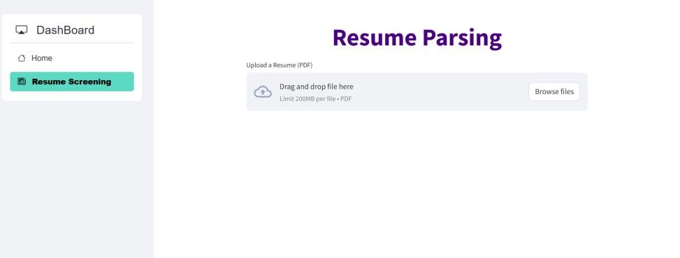
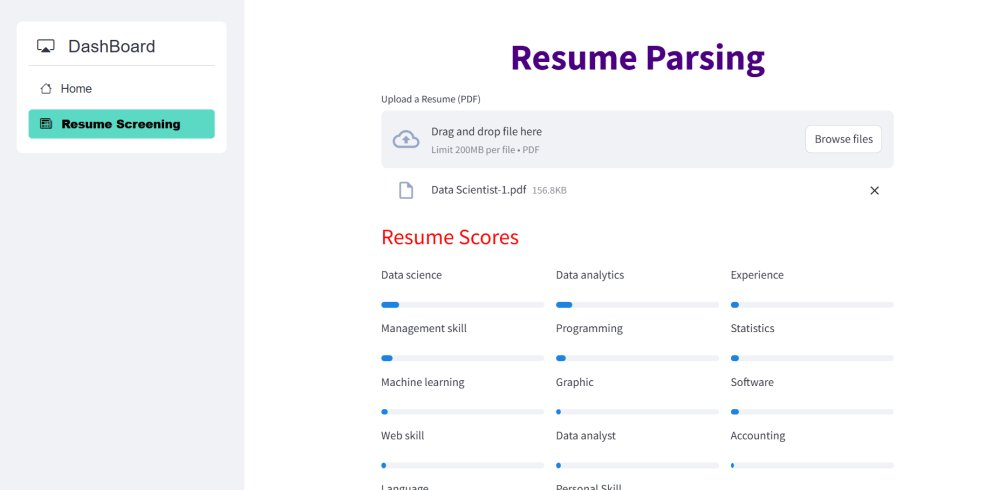

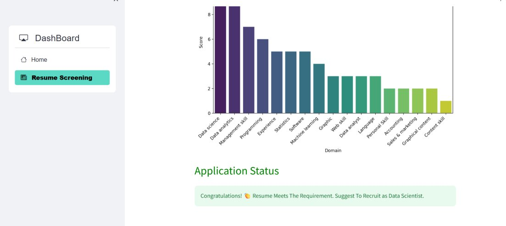
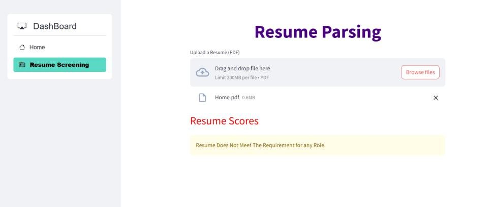
What I would change now
- Accessibility: the score bars rely on length and colour alone. I would add the number next to each bar and check the bar colour against the background for contrast.
- Consistency: section headings switch between purple, red and green. One heading style and colour set aside for status (success, warning) would read more calmly.
- Clear errors: an invalid file shows the same message as a weak resume. It should say the file could not be read and ask for a PDF resume.
- Plain language: "Suggest To Recruit as Data Scientist" overstates what a score can tell you. "Strong match for Data Scientist" leaves the decision with the recruiter, which was the point of reducing bias.
Case study 2 · Learning project · 2026
A mini component kit where looks change and behaviour does not
Problem
At Lenovo I built reusable UI components in React and Vue. A shared component only stays shared if teams can restyle it without copying it; once a team copies a component to change its look, its behaviour starts to drift. I wanted to practise the alternative: keep behaviour in the component and move every visual choice into tokens a team can change.
Decisions
- Variant, property or override? Variant changes meaning (primary, secondary, ghost). Property changes fit (size). Brand colour and corner radius are tokens, so changing them can never break focus, disabled or loading behaviour.
- States are designed, not left to the browser: hover, keyboard focus, disabled, loading and, for inputs, error.
- Disabled buttons stay focusable with
aria-disabled, so a keyboard user can still reach them and hear why they are unavailable. - The switch is a real switch: a button with
role="switch"andaria-checked, operable with Space and Enter.
Try it
Change the brand and radius tokens. Then press Tab to move through the components: focus, disabled and loading behave the same in every theme.
Button · variants × sizes
Button · states
Text input · states
Switch
Tokens in use
| Token | Value | Used for |
|---|---|---|
--k-brand | #2346d6 | Primary fill, secondary text and border, switch on |
--k-radius | 8px | Buttons and inputs |
--k-danger | #b42318 | Error border and message (paired with text, never colour alone) |
--k-focus | #2346d6 | 3px focus ring on every interactive component |
What I learned
The pale lilac option is there on purpose. It shows why a customization tool has to check tokens: white text on that colour fails WCAG contrast, so a team could break accessibility without touching any code. I have since grown this into a full design system (case study 4) and started rebuilding it in Figma with variables and variants named to match the tokens, so design and code use the same words.
Case study 3 · Personal projects · 2026
Documentation people can use without asking me
Problem
A component, an API or a report is only reusable if someone else can understand it alone. In two projects I treated the documentation as part of the product.
- Payroll API: every endpoint is described in Swagger/OpenAPI, so a developer can read the parameters and try a request in the browser. When a required field is missing, the page says which one. 16 xUnit tests cover the pay rules.
- Optical test report: the pipeline produces an HTML report that leads with four summary numbers, then states in one sentence what was cleaned and why, then shows the detail. 18 pytest tests keep it honest.
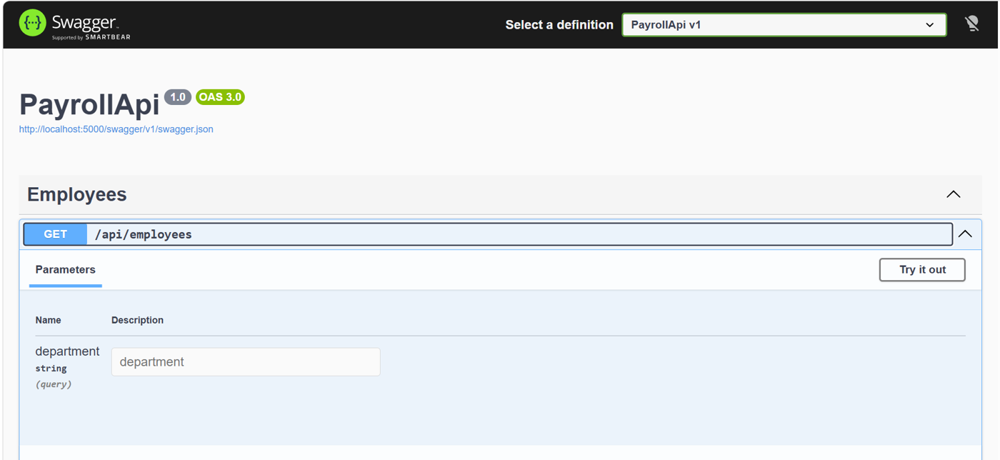
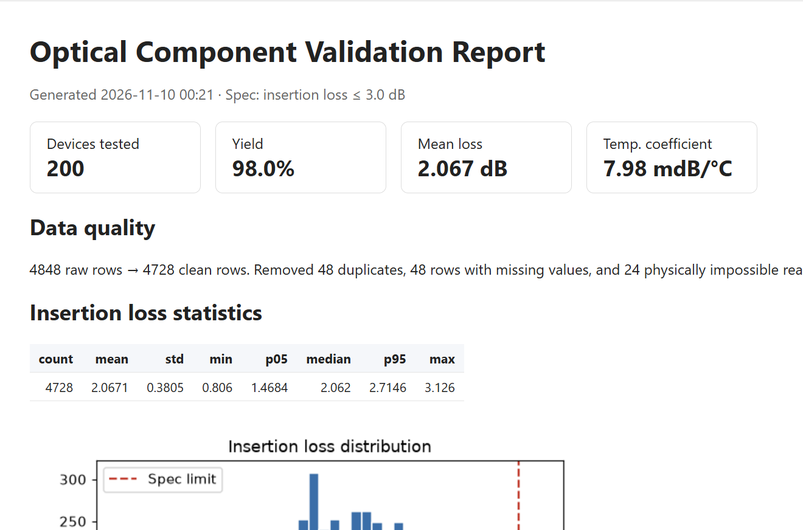
What I would change now
The report's statistics table uses raw column names like p05 and p95. For readers outside engineering I would label them "5th percentile" and "95th percentile", the same way a design system's docs should use the words its users use.
Case study 4 · Personal project · 2026
An accessible design system, and the claim flow I built with it
Live design system · Full case study · Clickable prototype · Code on GitHub · Figma file
Problem
Insurance claim forms are often one long page: unclear formats, errors shown only in red and only after submitting, and no chance to check answers. That is hard for everyone and hardest for people using a screen reader, a keyboard or a small phone. I wanted to fix it the way a design system team would: build accessible pieces once, document them, then design the flow only from those pieces.
What I did
- Tokens: colour, spacing, radius, type and a 44px minimum target, kept in one JSON file. Every colour pair is checked with the WCAG formula; all 14 pass AA.
- Seven components (button, text field, checkbox and radio, switch, alert, tabs, dialog), each with usage guidelines, do’s and don’ts, and accessibility notes. Keyboard behaviour follows the WAI-ARIA patterns.
- Naming conventions shared by code and Figma:
ds-button--secondaryin code,Button / Secondaryin Figma. In Figma I set up the colour variables and a Button component with variants and auto layout. - The claim flow: proto-personas (a phone user, a screen reader user, a keyboard-only user), a journey map, low-fidelity wireframes, then a three-step clickable prototype with hints before input, errors in text, a focused error summary and a “check your answers” step.
- Checked automatically: 22 tests, including axe-core scans of every page. The scan caught a real problem, navigation links outside a landmark, which I fixed.
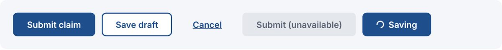
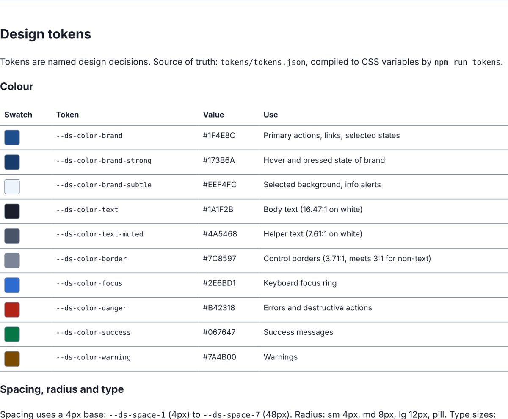
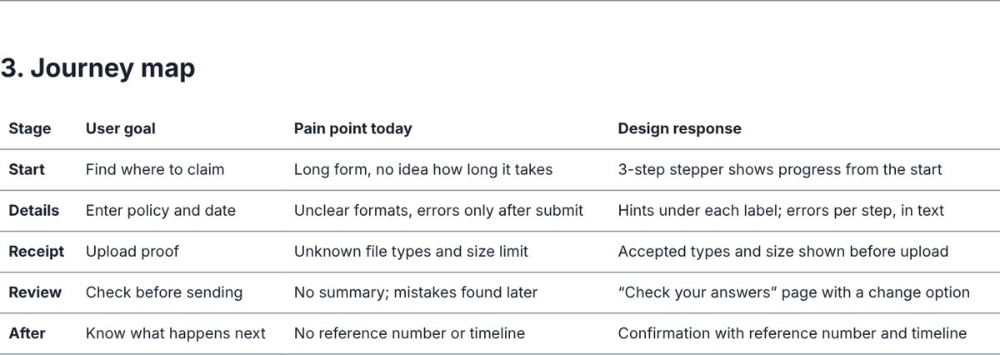
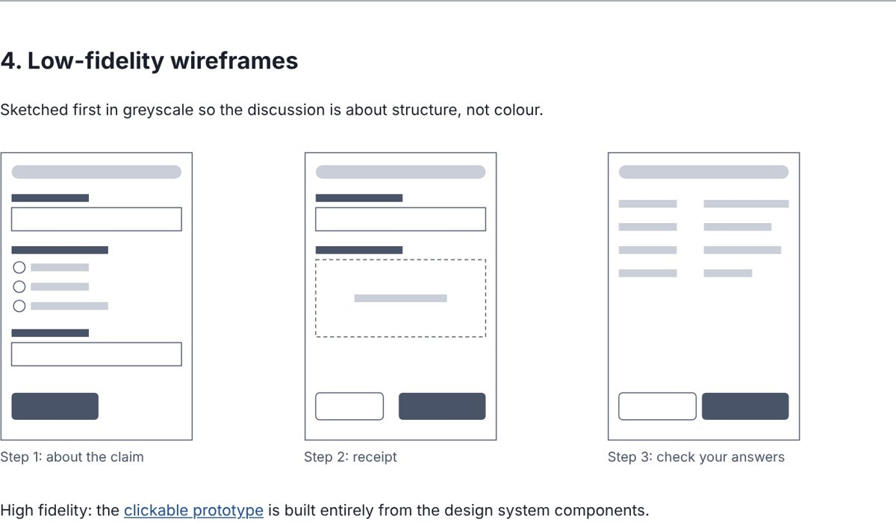
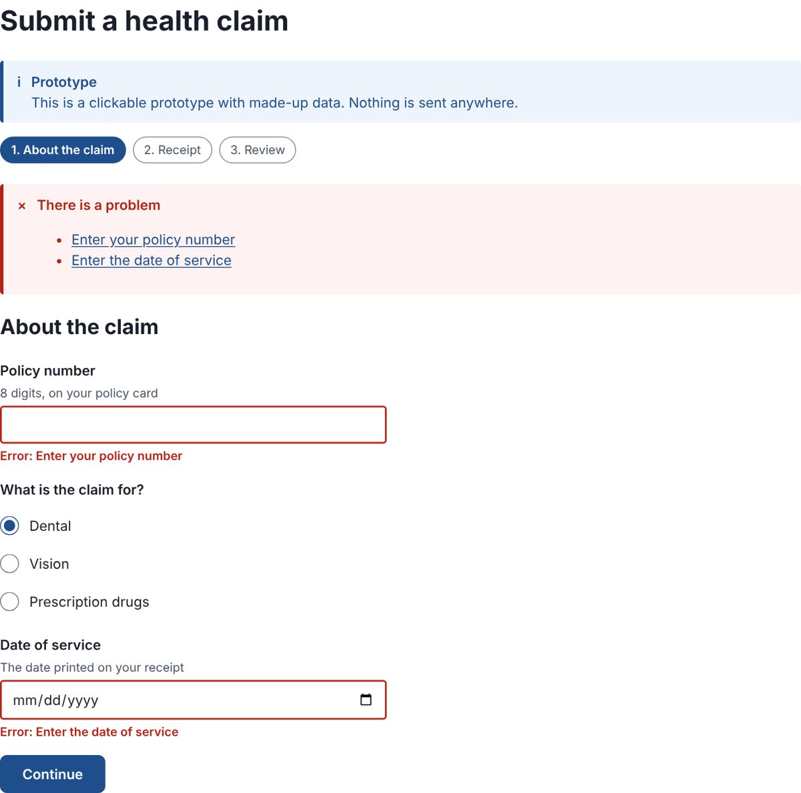
What I would change now
- Test with real people: the usability test plan is written but not yet run. The personas are assumptions until five sessions, including a screen reader user, confirm or change them.
- Finish the Figma library: build the remaining components as variants and the claim screens as a Figma prototype, so designers can use the system without reading code.
- Save and continue later: people like the phone user often stop halfway, so the flow should keep their progress.
Case study 5 · Personal project · 2026
An AI chatbot that answers questions about optical test data, and never makes up a number
Code on GitHub · Evaluation results
Problem
My optical test data pipeline produces a detailed report, but engineers usually want one quick answer: “What is the yield?”, “Is station B worse?”, “Why did this device fail?”. Opening a report or writing SQL for that is slow. A chatbot is faster, but only if engineers can trust it, and AI models are known to invent numbers.
What I did
- Tools, not guesses: every answer comes from one of 11 SQL tools (yield, stations, statistics, failing devices, temperature regression, data cleaning, spec limits) on 200 devices and 4,728 clean readings.
- Two modes: an offline rule-based mode that is free, fast and reproducible, and an LLM mode where a large language model (Claude API, tool calling) picks the tool and writes the answer.
- Guardrails for reliability: the model can only call the listed tools, off-topic questions are refused, and a groundedness check replaces any answer whose numbers are not in the data.
- Follow-up questions: “what about station B?” keeps the context of the previous question.
- Usability: a Streamlit web chat with example questions, and a small grey line under each answer showing which tool was used, so engineers can see where the number came from.
How I evaluated it
I wrote 60 labelled questions (single questions, off-topic questions and two-turn follow-ups) and checked the bot’s answers against results computed a different way, with pandas instead of SQL. It now scores 100% accuracy and 100% groundedness, and CI fails if accuracy drops below 95%. The first run was more useful than the final score: it found five answers containing numbers that were not in the data, which I fixed.
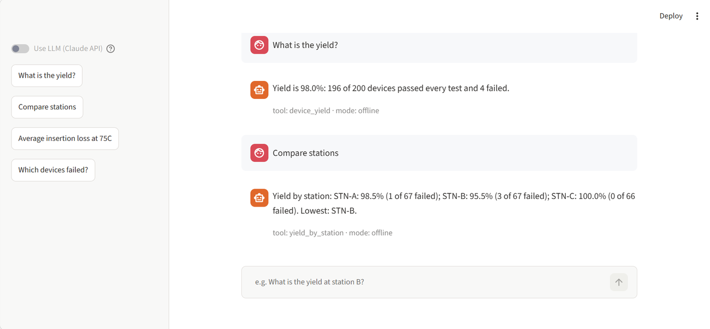
What I would change now
- Test with new questions: I wrote the test questions myself, so engineers’ own wording will score lower in offline mode. The next step is to collect real questions and score the LLM mode on them.
- Score the LLM mode: so far it is tested with a fake model (good answers, invented numbers, API errors). It still needs a scored run with a real API key.
- Charts in answers: a question like “how does temperature affect loss?” would be clearer with a small chart.
Case study 6 · Personal project · 2026
Lab test automation: scripting test equipment, and tracking it so results can be trusted
Code on GitHub · User guide for lab staff
Problem
Testing circuit boards by hand on a bench is slow and easy to get wrong: set the power supply, wait, read the meter, write it down, repeat for every board and every step. And a perfect test means nothing if the meter was out of calibration or the wrong instrument was plugged in.
What I did
- Scripted the instruments: Python drives a power supply and a multimeter with SCPI, the commands real bench instruments understand, through PyVISA. It runs on a simulated bench, and the same code runs on real instruments by changing their addresses.
- A repeatable test: a short YAML test plan (input voltages and limits) runs on 10 boards in one command and writes an Excel report. A planted defective board fails all three regulation steps, as it should.
- Equipment tracking: a register anyone can edit in Excel (asset tag, serial, location, calibration date, who has it). A run is blocked if an instrument is out of calibration, in repair, or reports a different serial number than the register.
- Safe by default: the power supply is switched off after every board, even if a step crashes.
How I tried to break it
29 tests run on Linux and Windows: a supply that stops answering in the middle of a board (the output must still be off afterwards), timeouts that clear after retries and ones that never do, limits exactly on the edge, calibration due today, a plan with low above high, and bad rows in the register.
Testing on real Windows machines matters. In my IT help desk toolkit, the tests on a Windows runner found a bug I would not have seen on my laptop: when exactly one service was stopped, Windows PowerShell 5.1 could not count it, so the report said "OK" instead of a warning. I fixed it and added a regression test.
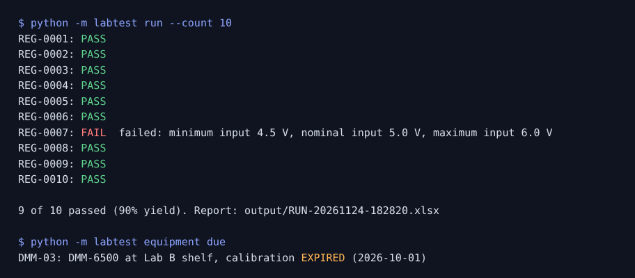
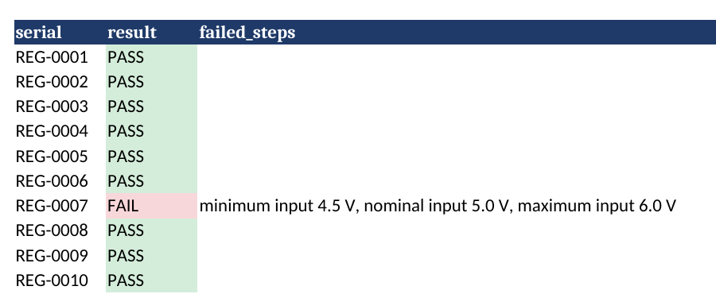
What I would change now
- Real instruments: it has only run on a simulated bench. The next step is a real power supply and meter, where settle time and noise matter.
- A shared register: a CSV works for one bench; a team would need a small database or SharePoint list so two people cannot check out the same instrument.
Case study 7 · Personal project · 2026
Recommendations, ads and visual search for a discovery feed: graph-based retrieval, a neural ranker, and the new-content problem
Problem
Recommend 20 pins a user will save next. Data is generated sample data (3,000 users, 6,000 pins in 24 topics, about 88,000 saves), not real platform data. I split each user's saves by time, so the model is always tested on the future, never on saves it has already seen.
What I did
- Graph-based retrieval: LightGCN in PyTorch passes user and pin embeddings along the save graph, trained with a ranking loss (a saved pin should score above a random one). It beat matrix factorization: recall@20 0.176 vs 0.140.
- A neural ranker: stage 2 scores about 250 candidates per user from graph, text, topic and popularity features. Recall@20 rose to 0.189 and NDCG@20 from 0.142 to 0.153.
- New pins: a graph model cannot recommend a pin nobody has saved. I added a "fresh pins" source from text embeddings, and hid some older pins from the graph during training so the ranker could learn how unsaved pins behave.
- Ads ranking: a calibrated click-through-rate model (AUC 0.801) that accounts for position bias. Ranking ads by bid × predicted CTR earned 2.9 times the revenue of ranking by bid alone, and still showed a relevant ad 77% of the time.
- Visual search (computer vision): on 2,000 real CIFAR-10 images, a pretrained ResNet-18 found a same-class image in the top 10 63% of the time, against 24% for raw pixels and 22% for the same network untrained.
- Two frameworks: I rebuilt the ranker in TensorFlow/Keras and got the same NDCG as PyTorch. Every experiment is tracked in MLflow.
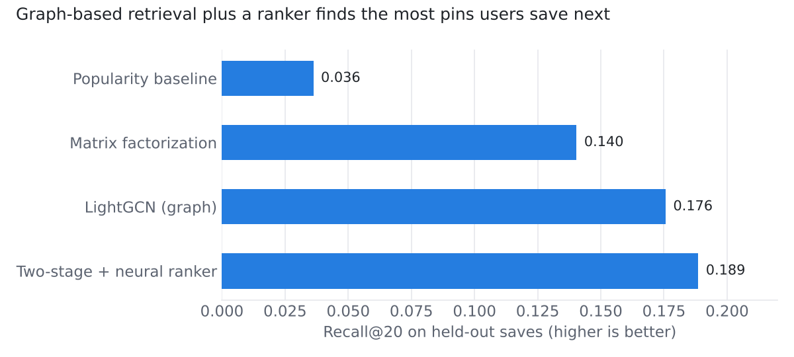
The trade-off I found
Even with fresh candidates, the ranker kept new pins out of the top 20, because established pins always scored higher. Reserving 3 of the 20 slots for the best fresh pins doubled catalog coverage (15.6% to 29.5%) and let new pins be discovered, for a small cost in recall (0.189 to 0.185). Which matters more is a product decision for an online A/B test, not an offline metric.
What I would change now
- Better content signals: titles here only reveal a pin's topic. The next step is feeding the ResNet image embeddings into the fresh-pins source, so new pins are matched by how they look.
- Scale: it trains on a laptop in 30 seconds. Real catalogs need approximate nearest-neighbour search for retrieval and sampled training.
Case study 8 · Personal project · 2026
Product analytics for a digital bank: finding where customers give up, and proving the fix
Code on GitHub · Product brief · Post-launch review
Problem
New customers start opening an account in a fictional bank's app and many never finish. Where do they stop, why, and does a redesign actually help? All data is generated sample data with known effects built in, so the analysis can be checked.
What I did
- Three sources, one answer: the account-opening funnel, 800 app reviews tagged by theme and 1,316 support contacts all pointed to identity verification (58.2% step conversion, 54.6% of 1-2 star reviews, the top contact reason).
- Product brief: a problem statement, 4 user stories with acceptance criteria, success metrics with a guardrail, and 4 options ranked with RICE.
- A/B test: 13,104 applications over 28 days. Conversion rose from 36.3% to 43.5% (95% CI +5.5 to +8.8 points) and satisfaction from 74.8% to 81.6%. I checked the 50/50 split first and confirmed the lift on iOS, Android and web.
- After launch: daily, weekly and monthly KPI reports in Excel and SQL, and a post-launch review (ID support contacts down 52%).
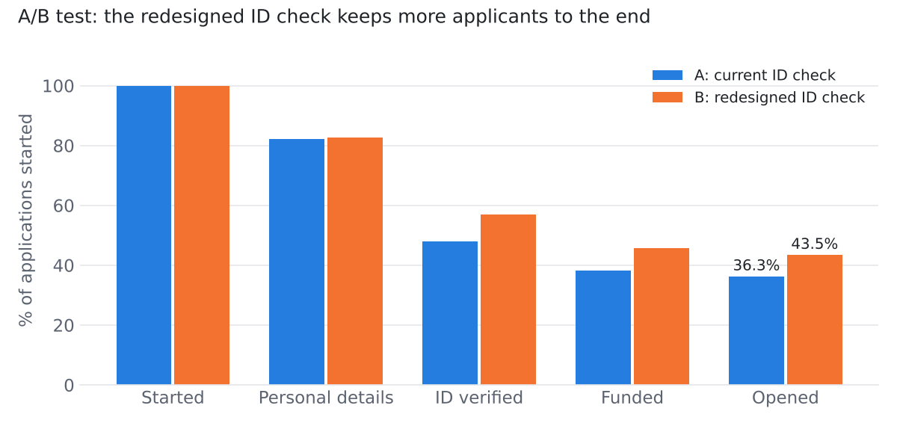
What I would change now
- Not every metric moved. Savings-goal adoption rose slightly but was not significant (p = 0.11), so I left it out of the success story. I would keep it in that review on purpose.
- Competitor benchmark: the next step is comparing onboarding in real banking apps by hand: steps, ID method and whether you can save and continue.
Case study 9 · Personal project · 2026
Equity market quality: how fee structures move trading, and why the venue that fills most is not the best
Code on GitHub · Market structure in plain language
Problem
Stocks trade on several competing venues with different fee models. I wanted to measure market quality the way an exchange's analytics team would. All data is generated sample data: 4 fictional venues with illustrative fees, 20 symbols and 3 institutional clients, in a 6-table SQLite database (475K trades, 156K quotes, 24K client orders).
What I did
- Venue monitoring: after the inverted (taker-maker) venue raised its taker rebate, its share of traded value rose from 12.0% to 19.0%, mostly from the largest maker-taker venue.
- Market quality: quoted spreads from 1.8 to 12.2 bps by liquidity tier, depth at the best bid and offer, effective spread by venue; dark midpoint fills saved takers 2.3 bps.
- Post-trade routing review: the inverted venue filled the most passive orders (77.9%) but kept the least per fill after price moves and fees (1.68 vs 3.41 bps, p < 0.001).
- Automated reporting: SQL with joins, window functions and CTEs (tests check it against Python), an Excel report with live SUMIFS and INDEX/MATCH formulas, and CSV extracts for a Tableau dashboard.
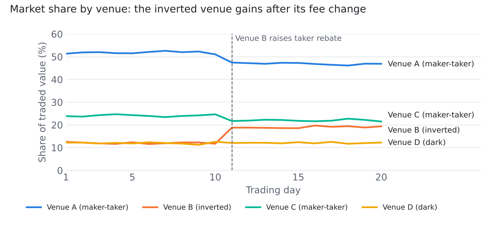
What I would change now
- Real order-book data: my quotes are only the best price. Full depth-of-book data would show queue position, which drives fill rates on inverted venues.
- Advice as a trade-off: for one client, moving flow off the inverted venue gains 0.78 bps per fill but cuts its fill rate by 9 points. I would present both, because the right answer depends on how urgent the client's orders are.